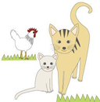

どうやって贈るの？（支援のしくみ）
ふんばろう動物班では、ボランティアメンバーが東日本大震災被災地の動物を保護している方々に直接お目にかかってお話を伺い、現地シェルターを確認して、動物の命をつなぐために必要な物資をAmazonほしい物リスト に登録しています。
インターネット上のショッピングサイト Amazon.co.jp のシステムを利用して、動物の保護主さまに『直接』品物を贈ることができます。
みなさまに、動物のごはんや消耗品をご支援いただくことで、保護主様は限られた資金を医療費や里親募集などに充てることができます。
どうぞ、ご支援ご協力をお願いいたします。
支援のしくみ
保護宅ごとのAmazonほしい物リストより、贈りたい品を選び、ご購入手続きに進んでください。ご購入いただくと、Amazon.co.jpのシステムを介して支援先へ直接品物が届けられます。
Amazonほしい物リストの使い方
・支援してくださる方は、下表のこのマーク→ をクリックしてください。
保護宅ごとのAmazonほしい物リストにジャンプします。（別ウィンドウが開きます）
・購入方法は、ご自宅用のお買い物と同様です。
・ご注意頂きたいのは、(1)ギフト設定にチェックを入れる (2)お届け先を選択する の2点です。特に、お届け先の選択を間違ってしまうと、品物がご自宅や別の保護主さまに配達されてしまいますので、充分お気を付けください。
▶初めてAmazon.co.jpでのお買い物をする方は、Amazon.co.jp のヘルプページ「初めてのご注文」をご覧ください。
▶くわしいお買い物の手順は、「よくいただく質問：Amazonほしい物リストでの買い物の仕方がわかりません。」をご覧ください。
▶クレジットカードをお持ちでない場合の購入方法は、こちら「スタッフブログ：実践編・クレジットカードがなくっても支援ができる！」を参考になさってください。
（いずれも別ウィンドウが開きます）
ギフト設定とは
●ギフト設定にした場合のみ、送り主さまのお名前などが保護主さまに伝わります。
ご購入手続きの途中で表示される [ □ギフトの設定 ] という項目にチェックを入れないと、送り主さまのお名前などの情報が保護主さまに伝わらない仕組みになっています。なるべく[ギフト設定]をご利用ください。
●ギフト設定ができない商品・送料がかかる商品があります。
商品を取り扱うショップによっては、[ギフト設定]ができない場合や、送料が別途かかる場合があります。ご購入の前に必ずご確認ください。
保護主さま一覧
| [D-03]宮城県東松島市・菅原ファミリーねこハウス（旧菅原さん宅） | |
| 震災前から捨て猫の保護・里親捜しをしていたご家族です。 津波で8匹の猫が入ったままの猫ハウスが流されましたが幸い全員助かりました。 震災で飼い主さんと一緒に暮らせないペットや迷い猫などを預かり、40匹を越える大所帯です。 治療やワクチン・不妊手術など医療費を個人で負担しています。フードやトイレ用品などのご支援をお願いします。 | |
| [D-04]宮城県石巻市・アニマルクラブ石巻 | |
| 宮城県石巻市を中心に、不幸な動物を助ける活動を四半世紀以上続けているボランティアグループです。石巻はたくさんの人と動物が被災し、1年以上たっても瓦礫だらけで人々の生活も安定していません。一緒に暮らせなくなった飼い主さんからの預かりや、放浪している動物の保護はまだまだ続いています。どうぞ継続的なご支援をお願いいたします。 | |
| [D-05]宮城県美里町・犬猫里親探しの会「バトンタッチ」 | |
| 宮城県東松島市・多賀城市・仙台市などを中心に、震災前より捨て犬や捨て猫の保護活動をされています。主に二人で活動されており、仕事を持ちながらも必死で命を繋いでいます。 震災により、さらに保護が必要な犬や猫が増えていると同時に、里親を見つけるのが厳しいだろう年齢の高い犬や猫、エイズ・白血病キャリアの猫たちも、終世お世話する覚悟で引き取り、愛情を注がれています。 また、東松島、野蒜地区などの放浪猫などの給餌も定期的にしており、引き続きのご支援が必要です。どうぞよろしくお願い致します。 |
|
| [D-06]福島県飯舘村・動物応援団 | |
| 東京電力福島第一原子力発電所の事故で「計画的避難区域」に指定され、 全村避難となっている福島県飯舘村では、村民有志による 「いいたて全村見守り隊」が結成され、日夜パトロールにはげんでいます。 やむなくペットを残して避難中の村民からの要望を受けて、多くの見守り隊メンバーが、パトロールの際に動物たちに給餌・給水をしています。 一緒に暮らせるその日までがんばる動物と飼い主さんのために、継続的なフード支援をお願いします。 | |
AmazonおよびAmazonのロゴは、Amazon.com, Inc.またはその関連会社の商標です。